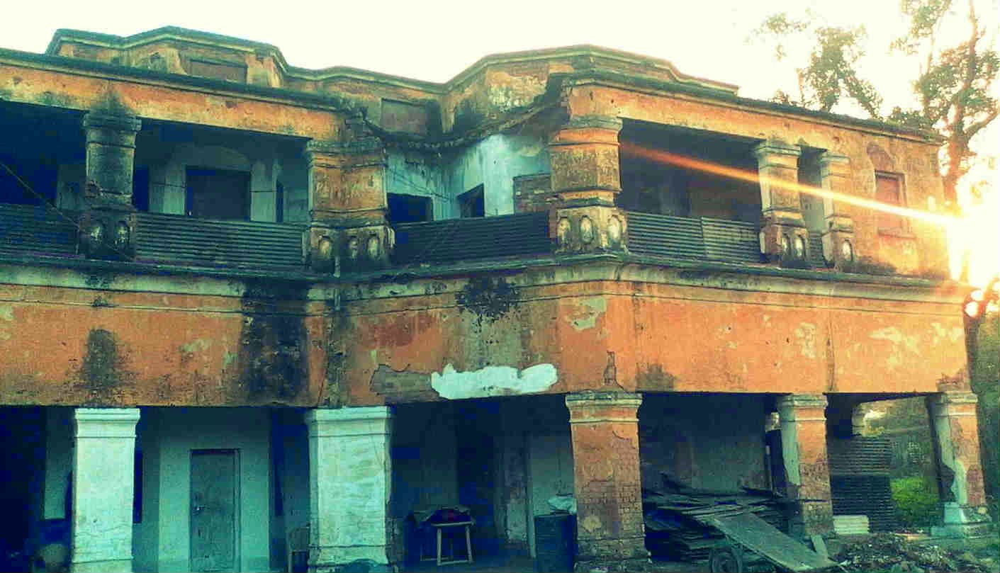

This black-sand beach in Gujarat was once an important Hindu cremation ground, and it is this history that gives it an eerie edge. The cheery morning atmosphere fades with the setting sun, and by night local people avoid Dumas Beach as much as possible. From spooky shrieks to whispers, people have reportedly heard haunting sounds coming from Dumas, said to be the spirits of tormented souls.
Assam is often associated with mysteries and mythical tales and the hill village of Jatinga is just another page in the book of Assam's unsolved puzzles. A sleepy hamlet in the North Cachar Hills (a district in Assam), Jatinga is located at a distance of 9 kms from Haflong, the district headquarters. Take a bus ride to Haflong from Guwahati and from there on you can take local conveyance to reach this mystic village. The most bizarre phenomenon that Jatinga witnesses, is the annual mass bird suicide which is yet to find any conclusive scientific explanation. From September to November every year, hundreds of birds commit mass suicide just after sunset - they move down from the sky, plunging to their deaths by crashing into buildings and trees. One possible reason behind this is the theory that the birds get disoriented by the late monsoon season amid wind and dense fog.
India's capital city of New Delhi has its own share of ghosts and ghost stories! Delhi is well connected with other parts of the country via road-links, rail networks and airways. Therefore travellers do not face many hassles in an effort to meet Delhi's most famous ghost or more appropriately 'ghostess'! The area around Delhi Cantt is said to be haunted by a vengeful spirit of a lady, clad in white dress, who asks motorists for lift and then suddenly disappears!
If you are wondering what forced an entire village to do so, heres the reason: The story involves a brutal prime minister, Salim Singh, who was rumoured to be even more powerful than the local king he served. Salim Singh (who was also called Zalim Singh for the brutalities he committed) was also infamous for debauchery. His tax collection methods were not fair and citizens were fed up with his ways. One fine day, the roving eye of Salim Singh fell on the beautiful daughter of Kundhara’s village chief. So mesmerised was he with her beauty that he declared his intentions to marry her! The Paliwal Brahmins were horrified by the proposal but were no match for the powerful prime minister who, by now, had threatened to levy heavier taxes on the villagers. Not having much of a choice, the villagers decided to pack their belongings and leave the village. Overnight! To this day, no one really knows where the villagers went and settled after fleeing from Kuldhara but the question arises why havent others come and settled in this already established village? And this is where things get spooky. According to the legend, the people of Kuldhara cursed the place as they left which prevented anyone from settling here. Since then, the village lies abandoned. To really test if Kuldhara is haunted, some people from Delhis Paranormal Society stayed here one night geared up with their equipment to record any paranormal activity. After spending 12 hours here, not only did they record unusual activity on their devices suggesting the presence of spirits in the area, some of them also spotted shadowy figures in the night and were tapped on their shoulders by someone when no one was really around.